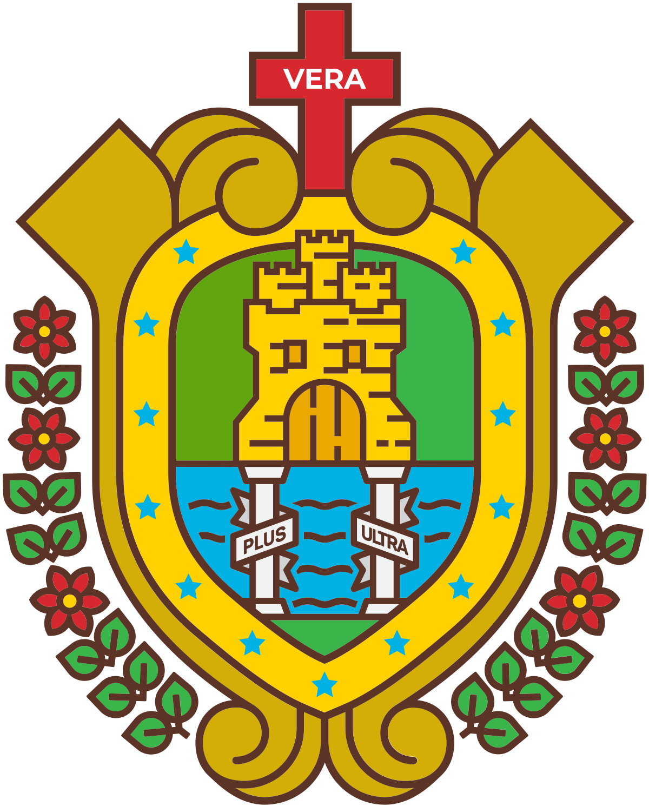

| üè´Escuela | üìñDescripci√≥n | üõ°Ô∏èEscudo |
|---|---|---|
| UNIVERSIDADES DE VERACRUZ | Institución pública en México, destacada por docencia, investigación y difusión cultural. |  |
| UNIVERSIDADES DE TEZIUTLÁN | Comprometida con la enseñanza, investigación y cultura en la región. | |
| UNIVERSIDADES DE PEROTE | Fomenta el desarrollo académico y cultural regional. | |
| UNIVERSIDADES DE ORIZABA | Impulsa el crecimiento educativo con programas de calidad. | |
| UNIVERSIDADES DE XALAPA | Impulsa el crecimiento educativo con programas de calidad. |